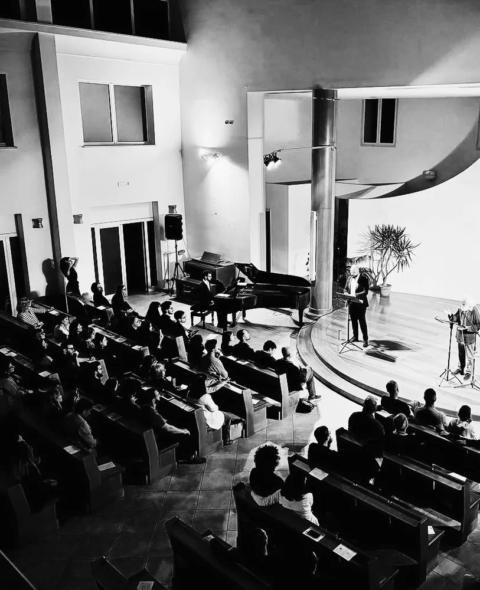
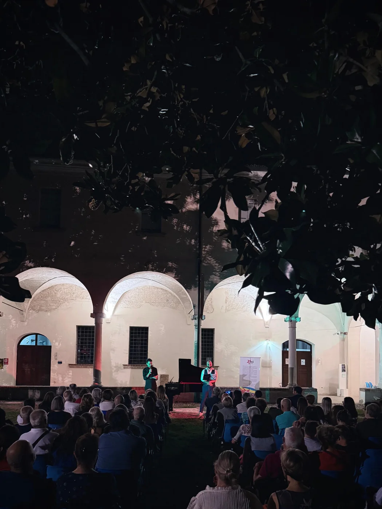

The collection
This collection, composed between 2024 and 2025, grew from the wish to set the poetic world of Nicola Muschitiello to music, drawing his verse from several publications, chiefly Lo Strazio (1980-86) and Terra Celeste (1999).
An urgent longing to rise carries the listener through the ten songs, between suspension, intimacy and tension. The seeking self meets and passes through the experience of love, lives its metamorphosis, and finally lifts its gaze towards a God unseen yet found again.
The collection is published by Universal Edition, partner of the events created, and was featured in an article by the music magazine La Decima Sinfonia.



Photographs: IANUA, 2025.
A weave of voices
The poetic voice speaks through the written verse, but it is interpreted by the composer, in the long tradition of the Lied that has always twinned music and poetry. The music becomes a driving force for the word and lets the verse be experienced in a new way.
The word becomes song and, through the poet’s own reading and the singing of baritenor Damiano Lombardo, is handed back to the audience in a third form, following the practice of operatic and Lied singing. The verse becomes carrier, sound and song, tracing a path of shared contemplation with great emotional power.
The audience can witness the reciprocity of a living artistic exchange between two different languages, both active on the international scene. The relationship becomes a constant dialogue and a search for a shared aesthetic, telling of the effort behind contemporary poetic and musical creation today.
In the concert, the story of this mutual discovery and of the creative emergence of word and sound can become a moment of learning for the listener. The synergy is heightened by the poet’s long experience in music, through many works and cross-disciplinary shows with international artists, and by the composer’s keen interest in poetry, which led him to publish his own collection on the bond between word and sound, Come canta il silenzio (Eretica).
The poetry
Nicola Muschitiello, a poet early recognised as having “a true voice” (Italo Calvino, 1978), was later described as “a most singular figure, the last of the (genuine) bohemians in Italian literature” (Mirella Appiotti, 2001).
With Roberto Roversi and other poets, he helped found and run the poetry cooperative “Dispacci” (1981-1987). Besides poetry, he works in translation, especially of French literature, and is a leading authority on Baudelaire. He has taught Literary Translation at the Universities of Siena and Bologna. He lent his image, voice and words to the film Morandi nel paese del cuore, made with unseen material on the painter Giorgio Morandi (2004).
He devises and narrates concerts of poetry and music with distinguished performers (such as Alexander Romanovsky, Roberto Prosseda, Maurizio Baglini and Giovanni Sollima) and with orchestras (Orchestra del Teatro dell'Opera di Roma, Solisti Aquilani). By Decree of the President of the Italian Republic of 8 September 2020, he was awarded a life annuity.



Photographs: IANUA, 2025.
In the press
- Vedo un suono che si leva, for baritone and pianoWorld premiere on 23 May 2025 in Bologna, with Nicola Elias Rigato and Damiano Lombardo, organised by the ianua artistic collective with La Decima Sinfonia.
- Vedo un suono che si leva: otto poesie di Nicola Muschitiello musicate da Nicola Elias RigatoRigato’s new collection on verse by Muschitiello, on the eve of the world premiere born of the collaboration with ianua.
The baritenor: Damiano Lombardo
He graduated with distinction in Opera Singing and Piano, and with top marks in Vocal Chamber Music, at the “F. Venezze” Conservatory in Rovigo. He has broadened his musical background from early music to the most radical avant-garde.
He has worked with leading directors and conductors such as R. Abbado, R. Muti, M.-W. Chung, J. Conlon, D. Oren, D. Abbado, A. Albanese, S. Poda and F. Zeffirelli. He has performed both as a soloist at music festivals and as a chorus artist with some of the most important opera houses in Italy and beyond (Fondazione Arena di Verona, Teatro La Fenice in Venice, Théâtre de La Monnaie in Brussels, Teatro Regio in Turin and Teatro Regio in Parma), and also appeared at the 2025 Sanremo Festival.
Thanks to his studies and an innate passion, he moves with ease and skill across a wide range of composers from different periods. He also teaches music at IC 20 in Bologna.